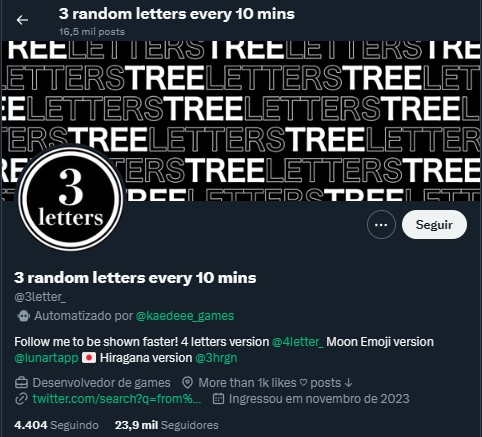

Currículo De Trabalho
Dados Pessoais
- Nome: Alexandre Silva Froes
- Idade: 18 Anos
- Bairro: Novo Mundo
- Celular: +55 34 99762-0178
- Email: Alexandre.froes@estudante.iftm.edu.br
Escolaridade & Histórico Profissional
- Ensino Médio Completo na E. E. Messias Pedreiro.
- Primeiro período de Sistemas para Internet no IFTM.
- Curso Profissionalizante de Empreendedorismo e NetWorking no SENAC.
- Desenvolvimento de uma StartUp no SENAC.
- Experiência profissional na empresa Martins como Jovem Aprendiz.
Hobbies
- Montar computadores
- Desenhar
- Jogar jogos eletrônicos
- Trilhas de Bicilceta
Sites do meu interesse
- Neal.fun Site de vários pequenos jogos e assuntos interessantes feitos por Neal Agarwal
- A conta do Twitter Earth Updates que diz que a terra é um jogo e lança as atualizações dela. Geralmente postando vários memes e posts engraçados para comunidade.

- Outra conta do twitter é a 3 random letters every 10 mins ou em português 3 letras aleatórias a cada 10 minutos. O nome da conta já fala por si só.

- Um site chamado This person does not exists ou em português 'Essa pessoa não existe' que cria imagens de faces humanas extremamente realistas de pessoas que não existem usando inteligencia artificial.
Todas essas imagens foram geradas usando o site, essas pessoas não existem.